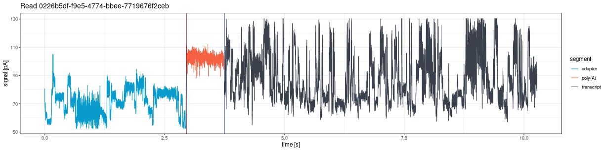
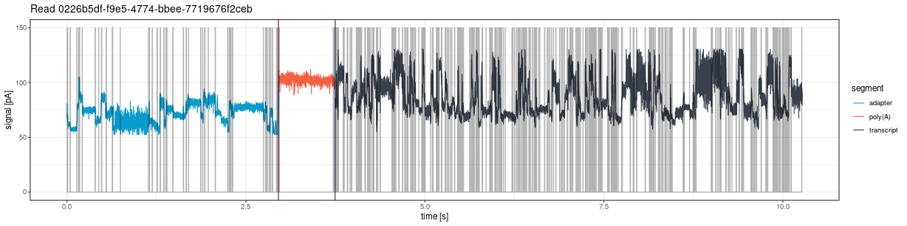
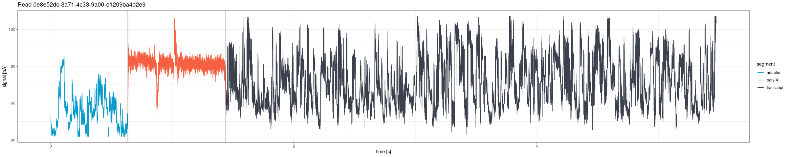
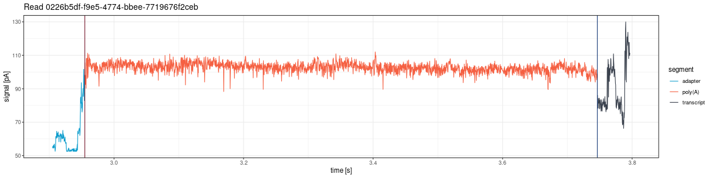
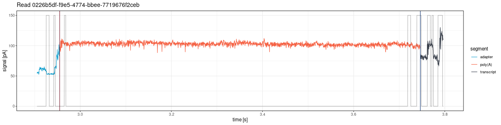
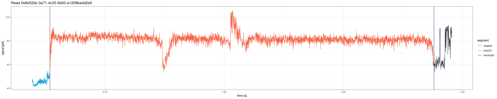
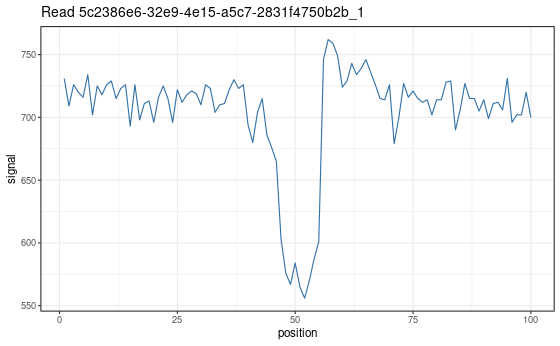
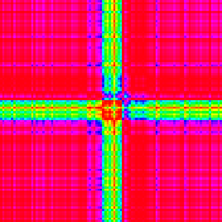
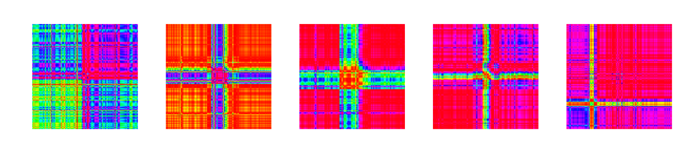

Note: Signal visualization functions are available for both the Guppy legacy pipeline (fast5-based:
plot_squiggle_fast5(),plot_tail_range_fast5()) and the Dorado DRS pipeline (POD5-based:plot_squiggle_pod5(),plot_tail_range_pod5()).
This vignette describes functions for visual inspection of raw
nanopore signals. For interactive signal browsing with filters and read
navigation, see the Signal Viewer tab in the Shiny dashboard:
vignette("shiny_app").
Plotting whole reads
plot_squiggle_fast5()
Draw the entire signal (squiggle) for a given read from fast5 files:
plot <- ninetails::plot_squiggle_fast5(
readname = "0226b5df-f9e5-4774-bbee-7719676f2ceb",
nanopolish = system.file('extdata', 'test_data',
'nanopolish_output.tsv',
package = 'ninetails'),
sequencing_summary = system.file('extdata', 'test_data',
'sequencing_summary.txt',
package = 'ninetails'),
workspace = system.file('extdata', 'test_data',
'basecalled_fast5',
package = 'ninetails'),
basecall_group = 'Basecall_1D_000',
moves = FALSE,
rescale = TRUE
)
print(plot)Parameters
| Parameter | Type | Default | Description |
|---|---|---|---|
readname |
character | required | Unique read identifier |
nanopolish |
character/data.frame | required | Path to Nanopolish polya output or a pre-loaded data frame |
sequencing_summary |
character/data.frame | required | Path to sequencing summary or a pre-loaded data frame |
workspace |
character | required | Path to directory with multi-fast5 files |
basecall_group |
character | "Basecall_1D_000" |
Fast5 hierarchy level for basecall data |
moves |
logical | FALSE |
If TRUE, show move transitions as background
shading |
rescale |
logical | TRUE |
If TRUE, scale signal to picoamperes (pA) per
second |
The plot shows vertical lines marking poly(A) tail boundaries:
- Red: 5’ end (poly(A) start)
- Navy blue: 3’ end (poly(A) end)


plot_squiggle_pod5()
Draw the entire signal for a given read from POD5 files (Dorado DRS pipeline):
plot <- ninetails::plot_squiggle_pod5(
readname = "0e8e52dc-3a71-4c33-9a00-e1209ba4d2e9",
dorado_summary = system.file('extdata', 'test_data', 'pod5_DRS',
'aligned_summary.txt',
package = 'ninetails'),
workspace = system.file('extdata', 'test_data', 'pod5_DRS',
package = 'ninetails'),
rescale = TRUE
)
print(plot)Parameters
| Parameter | Type | Default | Description |
|---|---|---|---|
readname |
character | required | Unique read identifier |
dorado_summary |
character/data.frame | required | Path to Dorado summary file or a pre-loaded data frame with
read_id, poly_tail_start,
poly_tail_end, and filename columns |
workspace |
character | required | Path to directory containing POD5 files |
rescale |
logical | TRUE |
If TRUE, scale signal to picoamperes (pA) |
residue_data |
data.frame | NULL |
Non-A residue table for overlay highlighting (optional) |
nonA_flank |
numeric | 250 |
Number of raw signal positions flanking each non-A overlay rectangle |
Note: The
movesparameter is not available for POD5-based functions. Move data is not stored in POD5 files in a format accessible without the Dorado basecaller internals.

Plotting tail range
plot_tail_range_fast5()
Plot only the poly(A) tail region from fast5 files, with optional flanking sequence:
plot <- ninetails::plot_tail_range_fast5(
readname = "0226b5df-f9e5-4774-bbee-7719676f2ceb",
nanopolish = system.file('extdata', 'test_data',
'nanopolish_output.tsv',
package = 'ninetails'),
sequencing_summary = system.file('extdata', 'test_data',
'sequencing_summary.txt',
package = 'ninetails'),
workspace = system.file('extdata', 'test_data',
'basecalled_fast5',
package = 'ninetails'),
basecall_group = 'Basecall_1D_000',
moves = TRUE,
rescale = TRUE
)
print(plot)Accepts the same parameters as
plot_squiggle_fast5().


plot_tail_range_pod5()
Plot only the poly(A) tail region from POD5 files, with configurable flanking and optional non-A residue overlay:
plot <- ninetails::plot_tail_range_pod5(
readname = "0e8e52dc-3a71-4c33-9a00-e1209ba4d2e9",
dorado_summary = system.file('extdata', 'test_data', 'pod5_DRS',
'aligned_summary.txt',
package = 'ninetails'),
workspace = system.file('extdata', 'test_data', 'pod5_DRS',
package = 'ninetails'),
flank = 150,
rescale = TRUE
)
print(plot)Parameters
| Parameter | Type | Default | Description |
|---|---|---|---|
readname |
character | required | Unique read identifier |
dorado_summary |
character/data.frame | required | Path to Dorado summary file or pre-loaded data frame |
workspace |
character | required | Path to directory containing POD5 files |
flank |
numeric | 150 |
Number of raw signal positions to include on each side of the poly(A) region |
rescale |
logical | TRUE |
If TRUE, scale signal to picoamperes (pA) |
residue_data |
data.frame | NULL |
Non-A residue table for overlay highlighting (optional) |
nonA_flank |
numeric | 250 |
Width (in raw positions) of each non-A overlay rectangle |

Non-A residue overlay
When residue_data is provided, both
plot_squiggle_pod5() and
plot_tail_range_pod5() overlay semi-transparent rectangles
at the estimated positions of detected non-adenosine residues. Each
rectangle is colored by residue type:
| Residue | Color | Hex |
|---|---|---|
| C (cytidine) | Dark gray | #3a424f |
| G (guanosine) | Green | #50a675 |
| U (uridine) | Light blue-gray | #b0bdd4 |
The nonA_flank parameter controls the width of each
rectangle in raw signal positions (default: 250 positions on each side
of the estimated center). A letter label (C, G, or U) is placed at the
top of each rectangle.
# Plot with non-A overlay
plot <- ninetails::plot_tail_range_pod5(
readname = "0e8e52dc-3a71-4c33-9a00-e1209ba4d2e9",
dorado_summary = dorado_summary_df,
workspace = "/path/to/pod5/",
flank = 150,
rescale = FALSE,
residue_data = residue_data,
nonA_flank = 250
)
print(plot)Position conversion: the function converts est_nonA_pos
(nucleotide position from the 3’ end) to raw signal coordinates using
linear interpolation between poly_tail_start and
poly_tail_end.
Plotting tail segments
plot_tail_chunk()
Visualize a specific signal chunk from the segmentation step. This function is mainly useful for debugging the pipeline or understanding how individual segments are classified.
# First, create tail chunk list using pipeline functions
tfl <- ninetails::create_tail_feature_list(...)
tcl <- ninetails::create_tail_chunk_list(tail_feature_list = tfl, num_cores = 2)
# Then plot a specific chunk
plot <- ninetails::plot_tail_chunk(
chunk_name = "5c2386e6-32e9-4e15-a5c7-2831f4750b2b_1",
tail_chunk_list = tcl
)
print(plot)Parameters
| Parameter | Type | Description |
|---|---|---|
chunk_name |
character | Identifier of the chunk (format:
readname_chunkindex) |
tail_chunk_list |
list | Output from create_tail_chunk_list()
|
Note: This function shows raw signal only; no scaling to picoamperes is applied.

Plotting Gramian Angular Fields
plot_gaf()
Visualize a single GAF matrix used for CNN classification. Each GAF image has two channels representing the Gramian Angular Summation Field (GASF) and the Gramian Angular Difference Field (GADF).
# First, create GAF list using pipeline functions
gl <- ninetails::create_gaf_list(tail_chunk_list = tcl, num_cores = 2)
# Plot a specific GAF
plot <- ninetails::plot_gaf(
gaf_name = "5c2386e6-32e9-4e15-a5c7-2831f4750b2b_1",
gaf_list = gl
)
print(plot)Parameters
| Parameter | Type | Description |
|---|---|---|
gaf_name |
character | Identifier of the GAF (same format as chunk names) |
gaf_list |
list | Output from create_gaf_list()
|

plot_multiple_gaf()
Plot all GAFs in a list. Each plot is saved as an image file in the working directory.
ninetails::plot_multiple_gaf(
gaf_list = gl,
num_cores = 10
)Parameters
| Parameter | Type | Default | Description |
|---|---|---|---|
gaf_list |
list | required | Output from create_gaf_list()
|
num_cores |
integer | 1 |
Number of cores for parallel rendering |
Warning: Use with caution. GAF lists can be very large, and plotting all at once may overload the system.

Signal visualization options
| Option | Description | Applies to |
|---|---|---|
rescale = FALSE |
Raw signal per position | Fast5, POD5 |
rescale = TRUE |
Signal scaled to picoamperes (pA) per second | Fast5, POD5 |
moves = FALSE |
Signal only | Fast5 only |
moves = TRUE |
Signal with move transitions in background | Fast5 only |
flank |
Positions flanking tail region (default: 150) | POD5 tail range only |
residue_data |
Non-A residue overlay highlighting | POD5 only |
nonA_flank |
Width of overlay rectangles (default: 250) | POD5 only |
Use cases
Signal visualization is useful for:
- Quality control: Inspect individual reads for signal quality and verify that poly(A) boundaries are correctly identified
- Debugging: Understand why specific reads were classified incorrectly by examining the raw signal shape
- Validation: Verify that detected non-adenosines correspond to visible signal deviations within the poly(A) region
- Publication figures: Generate high-quality signal plots for manuscripts and presentations
- Non-A overlay inspection: Confirm that the residue position estimates align with actual signal perturbations
Interactive signal viewer
For browsing signals interactively with filters, read navigation, and non-A overlay, use the Shiny dashboard’s Signal Viewer tab:
ninetails::launch_signal_browser(
summary_file = "/path/to/dorado_summary.txt",
pod5_dir = "/path/to/pod5/",
residue_file = "/path/to/nonadenosine_residues.txt"
)The dashboard provides:
- Filterable read list (by poly(A) length, decoration status, residue type, alignment genome, mapping quality)
- Previous/Next navigation through filtered reads
- Static Viewer sub-tab with full signal and zoomed poly(A) region
- Dynamic Explorer sub-tab with interactive Plotly zoom and pan
- Automatic non-A residue overlay when residue data is available
See vignette("shiny_app") for complete
documentation.
Summary of signal inspection functions
| Function | Description | Input |
|---|---|---|
plot_squiggle_fast5() |
Full read signal | Fast5 files |
plot_squiggle_pod5() |
Full read signal (+ optional non-A overlay) | POD5 files |
plot_tail_range_fast5() |
Poly(A) tail signal only | Fast5 files |
plot_tail_range_pod5() |
Poly(A) tail signal (+ optional non-A overlay) | POD5 files |
plot_tail_chunk() |
Signal segment from segmentation | Intermediate data |
plot_gaf() |
Single GAF image (GASF + GADF) | Intermediate data |
plot_multiple_gaf() |
Batch GAF rendering | Intermediate data |